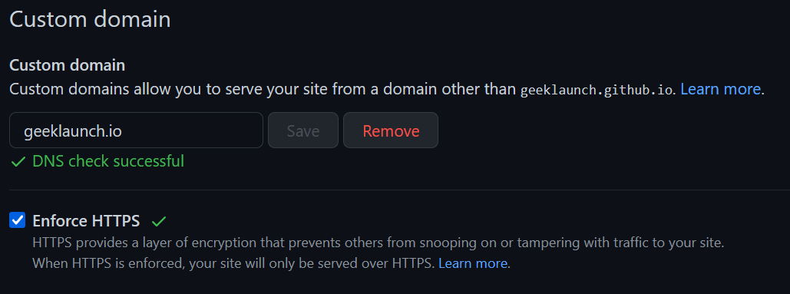
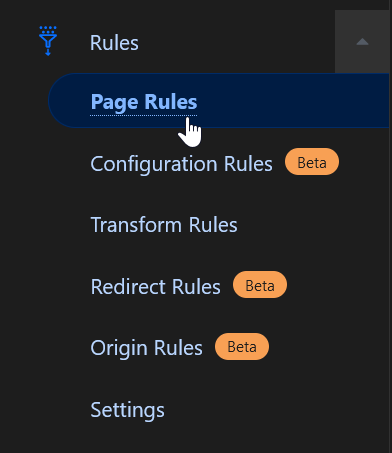

How to switch GitHub Pages to a new domain for free using Cloudflare
Using completely free serivces, set up path-preserving redirects from an old domain to a new one.
For reasons consisting of little more than vanity, I decided to puchase the domain geeklaunch.io and port this website over to it, replacing geeklaunch.net. However, I wanted to make sure that I maintained as much of my measly SEO rankings as possible, as well as not break any of the links to geeklaunch.net that may exist around the web.
Setting the DNS records on the new domain
For GitHub Pages, which is the hosting service I currently use for this website, the process for setting up a new domain to point at GitHub Pages is pretty well-documented.
Basically, all you need to do is set up the A records for your domain to point at the IP addresses of your host. (AAAA records for IPv6.)
Then, be sure to actually tell GitHub that you’ve set up the domain. Open up your repository, and under Settings → Pages → Custom domain, type in the domain and click “Save.”

Updating the base URL for the website
I use the Hugo static site generator to maintain this website. Depending on your website’s configuration, you may need to update the website’s configuration to tell it at what domain it will live:
Setting up SEO-preserving, HTTPS redirects
I use Namecheap as my domain registrar. They provide a simple DNS service that allows you to set up redirects, but unfortunately, they won’t automatically issue an SSL certificate for your domain. GitHub Pages does do this automatic issuance, but only for the domain that is currently configured. If I change the domain (which is what I’m trying to do!), the SSL certificate will be decommissioned. This means that if I simply used the redirect service provided by my registrar, the old domain would be downgraded to HTTP-only, which, in this day and age, would probably lose me quite a few SEO points.
Luckily, GitHub Pages isn’t the only place I can get a free SSL certificate automatically managed for my domain. There’s also Cloudflare.
Cloudflare’s free plan is more than sufficient for our needs.
Once you’ve set up your domain on Cloudflare (all you need to do is tell your domain registrar to point the domain at Cloudflare’s nameservers), select your domain from the Cloudflare dashboard, and navigate over to the “Page Rules” section on the sidebar.

Create a new Page Rule, and fill it in like so:
| Property | Value |
|---|---|
| URL | geeklaunch.net/* |
| Setting | Forwarding URL |
| Status code | 301 - Permanent Redirect |
| Destination URL | https://geeklaunch.io/$1 |
This will set up a path-preserving redirect from geeklaunch.net to geeklaunch.io. That is, https://geeklaunch.net/blog/fathomable-rust-macros/ will be forwarded to https://geeklaunch.io/blog/fathomable-rust-macros/. Since it’s a 301 redirect, SEO ranking will be passed over to the new URL.
You can find more details in the Cloudflare documentation for Page Rules.